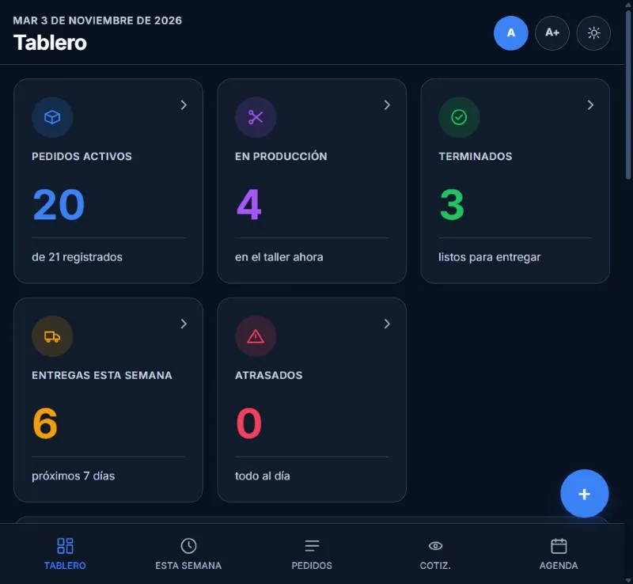

Software a medida para fábricas y talleres
¿Tu fábrica produce más, pero controlar cada orden es más difícil?
Centraliza pedidos, etapas de producción, materiales y entregas en un sistema diseñado alrededor de cómo trabaja tu fábrica.
Conversamos 20 minutos sobre tu operación. Sin compromiso.
¿Te ocurre algo de esto?
- 01
Órdenes que se pierden entre áreas
Ventas confirma fechas sin una visión clara de carga y avance de producción.
- 02
Inventario desactualizado
Los materiales se registran tarde y dificultan planificar compras o fabricación.
- 03
Seguimiento por mensajes
Para saber el estado de un pedido hay que llamar o preguntar a varias personas.
No necesitas seguir acumulando herramientas. Necesitas información conectada con tus procesos.
Software construido alrededor de tu operación
- 01
Órdenes de producción
Registro por pedido, responsables, fechas y estados.
- 02
Consumo de materiales
Movimientos vinculados a órdenes e inventario, según el proceso acordado.
- 03
Avance por etapas
Visualizar pendientes, trabajos en curso y productos terminados.
- 04
Despachos y reportes
Consultar compromisos de entrega e indicadores operativos.
Las funcionalidades definitivas se definen después del diagnóstico y la validación del alcance.
Experiencia real. Soluciones a medida.

Santa Isabel · Taller de confección
El reto. El taller necesitaba ver cada día qué pedidos estaban en producción, cuáles estaban listos, qué se entregaba en la semana y qué se había atrasado.
Lo que construimos. Desarrollamos un sistema interno que lleva el pedido desde la cotización hasta la entrega, pensado para usarse también desde el teléfono.
- Tablero diario: pedidos activos, en producción, terminados y atrasados
- Planificación de la semana por estado o por responsable
- Cotizaciones con control de vigencia
- Calendario de entregas y exportación a Excel
Así empezamos
- 01
Conversamos
Conocemos tu empresa y el proceso que hoy te genera más trabajo o errores.
- 02
Priorizamos
Delimitamos la oportunidad y definimos qué conviene resolver primero.
- 03
Mostramos el enfoque
Presentamos la propuesta y evaluamos la viabilidad de una demo o prototipo en 48 horas.
- 04
Desarrollamos por fases
Implementamos, probamos y mejoramos según el alcance acordado.
Cuéntanos sobre tu empresa
En 20 minutos revisaremos tu operación y el proceso que más te interesa mejorar. Te explicaremos los siguientes pasos sin compromiso.
Hablar por WhatsApp¡Gracias!
Recibimos tus datos. Te llevamos a WhatsApp con tu mensaje ya escrito: solo presiona enviar y coordinamos tu diagnóstico.
Enviar mi solicitud por WhatsAppPreguntas frecuentes
¿Funciona si fabricamos por pedido?
Sí, podemos estudiar flujos de producción por pedido y diseñar módulos acordes con sus etapas.
¿Debemos cambiar la manera de producir?
El objetivo es modelar el proceso y mejorar su control, sin imponer un flujo genérico.
¿Se integra con nuestro inventario actual?
Revisamos el sistema actual y sus opciones de integración antes de comprometer una conexión.
¿Se puede comenzar por un solo proceso?
Sí. Recomendamos priorizar el proceso con mayor impacto y ampliar por fases.
Entendamos primero cómo funciona tu empresa.
Solicitar diagnóstico gratuito